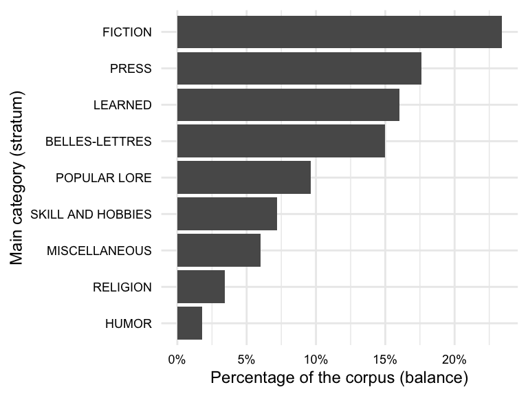
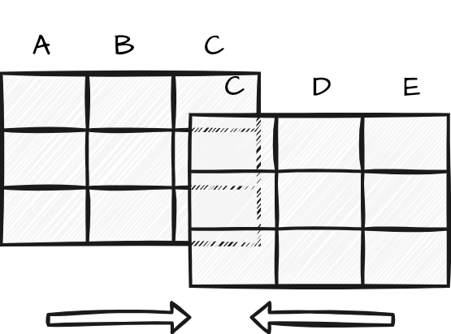

2 Data
In this chapter, I lay the groundwork for deriving insights from text analysis by focusing on content and structure of data and information. The concepts of populations and samples are introduced, highlighting their similarities and key differences. Connecting these topics to text analysis, language samples, or corpora, are explored, discussing their types, sources, formats, and ethical considerations. Subsequently, I highlight key concepts in creating information from corpus data, such as organization and transformation. Documentation in quantitative research is emphasized addressing the importance of data origin files and data dictionaries.
2.1 Data
Data is data, right? The term ‘data’ is so common in popular vernacular it is easy to assume we know what we mean when we say ‘data’. But as in most things in science, where there are common assumptions there are important details that require more careful consideration. Let’s turn to the first key distinction that we need to make to start to break down the term ‘data’: the difference between populations and samples.
Populations and samples
The first thing that comes to many people’s mind when the term population is used is human populations (derived from Latin ‘populus’). Say for example we pose the question –What’s the population of Milwuakee? When we speak of a population in these terms we are talking about the total sum of individuals living within the geographical boundaries of Milwaukee. In concrete terms, a population an idealized set of objects or events in reality which share a common characteristic or belong to a specific category. The term to highlight here is idealized. Although we can look up the US Census report for Milwaukee and retrieve a figure for the population, this cannot truly be the population. Why is that? Well, whatever method that was used to derive this numerical figure was surely incomplete. If not incomplete, by the time someone recorded the figure some number of residents of Milwaukee moved out, moved in, were born, or passed away. In either case, this example serves to point out that populations are not fixed and are subject to change over time.
Likewise when we talk about populations in terms of language we dealing with an idealized aspect of linguistic reality. Let’s take the words of the English language as an analog to our previous example population. In this case the words are the people and English is the grouping characteristic. Just as people, words move out, move in, are born, and pass away. Any compendium of the words of English at any moment is almost instananeously incomplete. This is true for all populations, save those relatively rare cases in which the grouping characteristics select a narrow slice of reality which is objectively measurable and whose membership is fixed (the complete works of Shakespeare, for example).
Therefore, (most) populations are amorphous moving targets. We subjectively hold them to exist, but in practical terms we often cannot nail down the specifics of populations. So how do researchers go about studying populations if they are theoretically impossible to access directly? The strategy employed is called sampling.
A sample is the product of a subjective process of selecting a finite set of observations from an idealized population with the goal of capturing the relevant characteristics of this population. When we talk about data in data science, we are talking about samples.
Whether selecting a sample for your research or evaluating a sample used in someone else’s research, there are two key characteristics to consider: the sampling frame and the representativeness. The sampling frame is the set of characteristics that define the population of interest. The representativeness is the degree to which the sample reflects the characteristics of the population. Both of these concern bias, albeit in different ways. By defining the population, a sampling frame sets the boundaries of the population and therefore the scope of research based on the sample. This bias is not a bad thing, in fact, the more clearly defined the sampling frame the better. Low representativeness, on the other hand, is a type of bias we would like to avoid. Given the nature of samples, perfect representativeness is not achievable. That said, there are a series of sampling strategies that tend to increase the representativeness of a sample, seen in Table 2.1.
| Strategy | Description |
|---|---|
| Size | Larger samples increase the likelihood of representing the population |
| Randomized | Avoid invertently including bias in selection |
| Stratified | Divide the population into sub-populations, ‘strata’, and sample from each |
| Balanced | Ensure that the relative size of the strata is reflected in the sample |
Together, large randomly selected and balanced stratified samples set the benchmark for sampling. However, hitting this ideal is not always feasible. There are situations where sizeable samples are not accessible. Alternatively, there may be instances where the population or its strata are not well understood. In such scenarios, researchers have to work with the most suitable sample they can obtain given the limitations of their research project.
Corpora
A sample, as just defined, of a language population is called a corpus (pl. corpora). Corpora are often classified into various types. These types reflect general characteristics of the scope of the corpus sampling frame. The most common types of corpora appear in Table 2.2.
| Type | Sampling scope |
|---|---|
| Reference | General characteristics of a language population |
| Specialized | Specific populations, e.g. spoken language, academic writing, etc. |
| Parallel | Directly comparable texts in different languages (i.e. translations) |
| Comparable | Indirectly comparable texts in different languages or language varieties (i.e. similar sampling frames) |
Of the corpus types, reference corpora are the least common and most ambitious. These resources aim to model the characteristics of a language population. Specialized corpora aim to represent more specific populations. What specialized corpora lack in breadth of coverage, they make up for in depth of coverage by providing a more targeted representation of specific language populations. Parallel and comparable corpora are both types of specialized corpora which aim to model different languages or different language varieties for direct or indirect comparison, respectively.
In text analysis, corpora are the raw materials of research. The aim of the quantitative text researcher is to select the corpus, or corpora, which best align with the purpose of the research. For example, a reference corpus such as the American National Corpus (Ide & Macleod, 2001) may be better suited to address a question dealing with the way American English works, but this general resource may lack detail in certain areas, such as medical language, that may be vital for a research project aimed at understanding changes in medical terminology. Furthermore, a researcher studying spoken language might collect a corpus of transcribed conversations from a particular community or region, such as the Santa Barbara Corpus of Spoken American English (Du Bois et al., 2005). While this would not include every possible spoken utterance produced by members of that group, it could be considered a representative sample of the population of speech in that context.
Other considerations
In preparing and conducting research using corpora, the most primary concerns is aligning research goals with the corpus resource. However, there are other, more practical, considerations to keep in mind.
Access
Ensuring access both in terms of physical access to the data and legal access to the data should not be overlooked in the design and execution of a project. Simply put, without access to the data, research cannot proceed. It is better to consider access early in the research process to avoid delays and complications later on.
The medium to acquire corpus data most used in contemporary quantitative research is the internet. Although a general search query can lead you to corpus data, there are a few primary sources of corpora you should be aware of, summarized in Table 2.3.
| Source | Description | Examples |
|---|---|---|
| Language repositories | Repositories that specialize in language data | Language Data Consortium, TalkBank |
| Data sharing platforms | Platforms that enable researchers to securely store, manage, and share data | GitHub, Zenodo, Open Science Framework |
| Developed corpora | Corpora prepared by researchers for research purposes | APIs, web scraping |
It is always advisable to start looking for data in a language repository. The advantage of beginning your data search in repositories is that a repository, especially those geared towards the linguistic community, will make identifying language corpora faster than through a general web search. Furthermore, repositories often require certain standards for corpus format and documentation for publication.
As part of a general movement towards reproducibility, more corpora are available on data sharing platforms. These platforms enable researchers to securely store, manage, and share data with others. Support is provided for various types of data, including documents and code, and as such they are a good place to look as they often include reproducible research projects as well.
Finally, if satisfactory data cannot be found in a repository or data sharing platform, researchers may need to develop their own corpus. There are two primary ways to attain language data from the web. The first is through an Application Programming Interface (API). APIs are, as the title suggests, programming interfaces which allow access, under certain conditions, to information that a website or database accessible via the web contains.
The second, more involved, way to acquire data from the web is is through the process of web scraping. Web scraping is the process of harvesting data from the public-facing web. Language texts may be found on sites as uploaded files, such as pdf or doc (Word) documents, or found displayed as the primary text of a site. Given the wide variety of documents uploaded and language behavior recorded daily on news sites, blogs and the like, compiling a corpus has never been easier. Having said that, how the data is structured and how much data needs to be retrieved can pose practical obstacles to collecting data from the web, particularly if the approach is to acquire the data by manually instead of automating the task.
Beyond physical access to the data, legal access is also a consideration. Just because data is available on the web does not mean it is free to use. Repositories, APIs, and individual data resources often have licensing agreements and terms of use, ranging from public domain to proprietary licenses. Respecting intellectual property rights is crucial when working with corpus data. Violating these rights can lead to legal and ethical issues, including lawsuits, fines, and damage to one’s professional reputation. To avoid these problems, researchers must ensure they have the necessary permissions to use copyrighted works in their research. Consult “U.s. Copyright office” (n.d.) or an academic librarian for guidance on copyright law and fair use.
Formats
Whether you are using a published corpus or developing your own, it is important to understand how the data you want to work with is formatted so you can ensure that you are prepared to conduct the subsequent processing steps. When referring to the format of a corpus, this includes the folder and file structure, the file types, and how file content is encoded electronically. Yet, the most important characteristic, especially for language-based data, is the internal structure of the files themselves. With this in mind less discuss the difference between unstructured, semi-structured, and structured data.
A corpus may include various types of linguistic (e.g. part of speech, syntactic structure, named entities, etc.) or non-linguistic (e.g. source, dates, speaker information, etc.) attributes. These attributes are known as metadata, or data about data. As a general rule, files which include more metadata tend to be more internally structured. Internal file structure refers to the degree to which the content has been formatted such that these pieces of information are easy to query and analyze by a computer. Let’s review characteristics of the three main types of file structure types and associate common file extensions that files in each have.
Unstructured data is data which does not have a machine-readable internal structure. This is the case for plain text files (.txt), which are simply a sequence of characters. For example, in Snippet 2.1 we see plain text file from the the Manually Annotated Sub-Corpus of American English (MASC) (Ide, Baker, Fellbaum, Fillmore, & Passonneau, 2008):
Snippet 2.1 MASC .txt file
Sound is a vibration. Sound travels as a mechanical wave through a medium, and in space, there is no medium. So when my shuttle malfunctioned and the airlocks didn't keep the air in, I heard nothing.Other examples of files which often contain unstructured data include .pdf and .docx files. While these file types may contain data which appears structured to the human eye, the structure is not designed to be machine-readable. As such the data would typically be read into R as a vector of character strings. It is possible to perform only the most rudimentary queries on this type of data, such as string matches. For anything more informative, it is necessary to further process this data, as we will see in Section 2.2.1 and Section 2.2.2.
On the other end of the spectrum, structured data is data which conforms to a tabular format in which elements in tables and relationships between tables are defined. This makes querying and analyzing easy and efficient. Relational databases (e.g. MySQL, PostgreSQL, etc.) are designed to store and query structured data. The data frame object in R is also a structured data format. In each case, the data is stored in a tabular format in which each row represents a single observation and each column represents a single attribute whose values are of the same type.
In Snippet 2.2 we see an example of an R data frame object which overlaps with the language in the plain text file in Snippet 2.1:
Snippet 2.2 MASC R data frame
doc_id date modality token_id word lemma pos
<int> <dbl> <fct> <int> <chr> <chr> <chr>
1 1 2008 Writing 1 Sound sound NNP
2 1 2008 Writing 2 is be VBZ
3 1 2008 Writing 3 a a DT
4 1 2008 Writing 4 vibration vibration NN
5 1 2008 Writing 5 . . .
6 1 2008 Writing 6 Sound sound NNP
7 1 2008 Writing 7 travels travel VBZ
8 1 2008 Writing 8 as as IN
9 1 2008 Writing 9 a a DT
10 1 2008 Writing 10 mechanical mechanical JJHere we see that the data is stored in a tabular format with each row representing a single observation (word) and each column representing a single attribute. This tabular structure supports the increased number of metadata attributes. Internally, R applies a schema to ensure the values in each column are of the same type (e.g. <chr>, <dbl>, <fct>, etc.). This structured format is designed to be easy to query and analyze and as such is the primary format for data analysis in R.
Semi-structured data falls between unstructured and structured data. This covers a wide range of file structuring approaches. For example, a otherwise plain text file with part-of-speech tags appended to each word is minimally structured, Snippet 2.3.
Snippet 2.3 MASC .txt file with part-of-speech tags
Sound/NNP is/VBZ a/DT vibration/NN ./. Sound/NNP travels/VBZ as/IN a/DT mechanical/JJ wave/NN through/IN a/DT medium/NN ,/, and/CC in/IN space/NN ,/, there/EX is/VBZ no/DT medium/NN ./. So/RB when/WRB my/PRP$ shuttle/NN malfunctioned/JJ and/CC the/DT airlocks/NNS did/VBD n't/RB keep/VB the/DT air/NN in/IN ,/, I/PRP heard/VBD nothing/NN ./.Towards the more structured end of semi-structured data, many file formats including .xml and .json contain hierarchical data. For example, in Snippet 2.4 shows a snippet from a .xml file from the MASC corpus.
Snippet 2.4 MASC .xml file
<a xml:id="penn-N264215" label="tok" ref="penn-n7345" as="anc">
<fs>
<f name="base" value="sound"/>
<f name="msd" value="NNP"/>
<f name="string" value="Sound"/>
</fs>
</a>
<node xml:id="penn-n7346">
<link targets="seg-r13152"/>
</node>
<a xml:id="penn-N264243" label="tok" ref="penn-n7346" as="anc">
<fs>
<f name="string" value="is"/>
<f name="msd" value="VBZ"/>
<f name="base" value="be"/>
</fs>
</a>
<node xml:id="penn-n7347">
<link targets="seg-r13154"/>
</node>The format of semi-structured data is often influenced by characteristics of the data or reflect an author’s individual preferences. It is sometimes the case that data will be semi-structured in a less-standard format. For example, the Switchboard Dialog Act corpus (SWDA) (University of Colorado Boulder, 2008), in Snippet 2.5, includes a .utt file extension for files which contain utterances annotated with dialog act tags.
Snippet 2.5 SWDA .utt file
o A.1 utt1: Okay. /
qw A.1 utt2: {D So, }
qy^d B.2 utt1: [ [ I guess, +
+ A.3 utt1: What kind of experience [ do you, + do you ] have, then with child care? /
+ B.4 utt1: I think, ] + {F uh, } I wonder ] if that worked. /
qy A.5 utt1: Does it say something? /Whether standard or not, semi-structured data is often designed to be machine-readable. As with unstructured data, the ultimate goal is to convert the data into a structured format and augment the data where necessary to prepare it for a particular research analysis.
2.2 Information
Identifying an adequate corpus resource, in terms of content, access, and formatting, for the target research question is the first step in moving a quantitative text research project forward. The next step is to select the components or characteristics of this resource that are relevant for the research and then move to organize the attributes of this data into a more informative format. This is the process of converting corpus data into a dataset –a tabular representation of particular attributes of the data as the basis for generating information. Once the data represented as dataset, it is often manipulated and transformed adjusting and augmenting the data such that it better aligns with the research question and the target analytical approach.
Organization
Data alone is not informative. Only through explicit organization of the data in a way that makes relationships and meaning explicit does data become information. In this form, our data is called a dataset. This is a particularly salient hurdle in text analysis research. Many textual sources are unstructured or semi-structured. This means relationships that will be used in the analysis have yet to be purposefully drawn and organized as a dataset.
Tidy Data
The selection of the attributes from a corpus and the juxtaposition of these attributes in a relational format, or dataset, that converts data into information is known as data curation. The process of data curation minimally involves deriving a base dataset, or curated dataset, which establishes the main informational associations according to philosophical approach outlined by Wickham (2014).
In this work, a tidy dataset refers both to the structural (physical) and informational (semantic) organization of the dataset. Physically, a tidy dataset is a tabular data structure, illustrated in Figure 2.2, where each row is an observation and each column is a variable that contains measures of a feature or attribute of each observation. Each cell where a given row-column intersect contains a value which is a particular attribute of a particular observation for the particular observation-feature pair also known as a data point.

In terms of semantics, columns and rows both contribute to the informational value of the dataset. Let’s start with columns. In a tidy dataset, each column is a variable, an attribute that can take on a number of values. Although variables vary in terms of values, they do not in type. A variable is of one and only one informational type. Statistically speaking, informational types are defined as levels of measurement, a classification system used to semantically distiguish between types of variables. There are four levels (or types) in this system: nominal, ordinal, interval, and ratio.
In practice, however, text analysis researchers often group these levels into three main informational types: categorical, ordinal, and numeric (Gries, 2021). What do these informational types represent? Categorical data is for labeled data or classes that answer the question “what?” Ordinal data is categorical data with rank order that answers the question “what order?” Numeric data is ordinal data with equal intervals between values that answers the question “how much or how many?”
Let’s look at an example of a tidy dataset. Using the criteria just described, let’s see if we can identify the informational values (categorical, ordinal, or numeric) of the variables that appear in a snippet from the MASC corpus in dataset form in Table 2.4.
| doc_id | modality | date | token_id | word | pos | num_let |
|---|---|---|---|---|---|---|
| 1 | Writing | 2008 | 1 | Sound | NNP | 5 |
| 1 | Writing | 2008 | 2 | is | VBZ | 2 |
| 1 | Writing | 2008 | 3 | a | DT | 1 |
| 1 | Writing | 2008 | 4 | vibration | NN | 9 |
| 1 | Writing | 2008 | 5 | . | . | 1 |
| 1 | Writing | 2008 | 6 | Sound | NNP | 5 |
| 1 | Writing | 2008 | 7 | travels | VBZ | 7 |
| 1 | Writing | 2008 | 8 | as | IN | 2 |
| 1 | Writing | 2008 | 9 | a | DT | 1 |
| 1 | Writing | 2008 | 10 | mechanical | JJ | 10 |
We have seven variables listed as headers for each of the columns. We could go one-by-one left-to-right but let’s take another tack. Instead, let’s identify all those variables that cannot be numeric –these are all the non-numeral variables: modality, word, and pos. The question to ask of these variables is whether they represent an order or rank. Since modalities, words, and parts-of-speech are not ordered values, they are all categorical.
Now in relation to doc_id, date, token_id, and num_let. All four are numerals, so they could be numeric. But they could also be numeral representations of categorical or ordinal data. Before we can move forward, we need to make sure we understand what each variable means and how it is measured, or operationalized. The variable name and the values can be helpful in this respect. doc_id and token_id are unique identifiers for each document and word. date is what it sounds like, a date, and is operationalized as a year in the Gregorian calendar. And num_let seems quite descriptive as well, number of letters, appearing as a letter count.
With this in mind, let’s return to the question of whether these variables are numeric, ordinal, or categorical. Starting with the trickiest one, date, we can ask the question to identify numeric data: “how much or how many?”. In the case of date, the answer is neither. A date is a point in time, not a quantity. So date is not numeric. But it does provide information about order. Hence, date is ordinal. Next, num_let is numeric because it answers the question “how many?”. Now, doc_id and token_id are both identifiers, so they are not numeric, but the question is whether they encode order as well. In this case, it depends. If the identifiers are assigned in a way that reflects the order of the documents or tokens, then they are ordinal. It is more likely the case that the doc_id is not ordinal, but the token_id is. This is because the token_id is likely assigned in the order the words appear in the document.
Let’s turn to the second semantic value of a tidy dataset. In a tidy dataset, each row is an observation. But an observation of what? This depends on what the unit of observation is. That sounds circular, but its not. The unit of observation is simply the primary entity that is being observed or measured (Sedgwick, 2015). Even without context, it can often be identified in a dataset by looking at the level of specificity of the variable values and asking what each variable describes. When one variable appears to be the most individualized and other variables appear to describe that variable, then the most individualized variable is likely the unit of observation of the dataset, i.e. the meaning of each observation.
Applying these strategies to the Table in 2.4, we can see that each observation at its core is a word. We see that the values of each observation are the attributes of each word. word is the most individualized variable and the pos (part-of-speech), num_let, and token_id all describe the word.
The other variables doc_id, modality, and date are not direct attributes of the word. Instead, they are attributes of the document in which the word appears. Together, however, they all provide information about the word.
As we round out this section on data organization, it is important to stress that the purpose of curation is to represent the corpus data in an informative, tidy format. A curated dataset serves as a reference point making relationships explicit, enabling more efficient querying, and paving the way for further processing before analysis.
Transformation
At this point have introduced the first step towards creating a dataset ready for analysis, data curation. However, a curated dataset is rarely the final organizational step before proceeding to statistical analysis. Many times, if not always, the curated dataset requires transformation to derive or generate new data for the dataset. This process may incur row-wise (observation) or column-wise (variable) level changes, as illustrated in Figure 2.3.

The results build on and manipulate the curated dataset to produce a transformed dataset. While there is typically one curated dataset that serves as the base organizational dataset, there may be multiple transformed datasets, each aligning with the informational needs of specific analyses in the research project.
In what follows, we will group common transformation processes into two purpose-based groupings: preparation and enrichment. The process may include one or more of the subsequent transformations but is rarely linear and is most often iterative. The bottom line is, however, to make the dataset more informative and more amenable to the particular aims of a given analysis.
Preparation
The purpose of preparation transformations is to clean, standardize, and derive the key attributes of the dataset on which further processing will depend. Common preparation transformations include text normalization and text tokenization.
Let’s take a toy dataset, in Table 2.5, as a starting point for exploring various transformations. In this dataset, we have three variables, text_id, sent_id, and sentence. It has five observations.
text_id, sent_id, and sentence
| text_id | sent_id | sentence |
|---|---|---|
| 1 | 1 | It’s a beautiful day in the US, and our group decided to visit the famous Grand Canyon. |
| 1 | 2 | As we reached the destination, Jane said, “I can’t believe we’re finally here!” |
| 1 | 3 | The breathtaking view left us speechless; indeed, it was a sight to behold. |
| 1 | 4 | During our trip, we encountered tourists from different countries, sharing stories and laughter. |
| 1 | 5 | For all of us, this experience will be cherished forever. |
Text normalization is the process of standardizing text to convert the text into a uniform format and reduce unwanted variation and noise. It is often a preliminary step in data transformation processes which include variables with text.
The normalization we apply will depend on the specific needs of the project, but can include operations such as changing the case of the text, removing punctuation, standardizing forms, etc. The goal is to reduce the noise in the text and make it more amenable to analysis.
Normalization tends to preserve the number of rows and columns in the dataset but does change the values of the variables. These tasks should be applied with an understanding of how the changes will impact the analysis. For example, looking at tbl-data-text-dataset, lowercasing can be useful for reducing differences between words that are otherwise identical, yet differ in case due to word position in a sentence (“The” versus “the”). However, lowercasing can also be problematic if the case of the word carries semantic value, such as in the case of “US” (United States) and “us” (first-person plural pronoun).
Text tokenization involves adapting the text such that it reflects the target linguistic unit that will be used in the analysis. This is a row-wise operation expanding the number of rows, if the linguistic unit is smaller than the original variable, or reducing the number of rows, if the linguistic unit is larger than the original variable.
Text variables can be tokenized at any linguistic level, to the extent we can operationalize the linguistic unit. The operationalized linguistic unit is known as a term. For example, terms can be characters, words, sentences, etc. When we refer to the individual units of term, we use the expression tokens. Another key term to introduce is types, which refers to the unique tokens in a term variable. For example, in the sentence 1 in Table 2.5, there are 16 types and 17 tokens –as ‘the’ is repeated. Note that there will always be at least as many tokens as types, but there can be many more tokens than types for any given term variable.
Sequential groupings of characters and words are also common terms used in text analysis. These are known as \(n\)-grams, where \(n\) is the number of words or characters in the term. For example, a word bigram is a sequence of two words, and a character trigram is a sequence of three characters.
| text_id | sent_id | trigram |
|---|---|---|
| 1 | 1 | its |
| 1 | 1 | tsa |
| 1 | 1 | sab |
| 1 | 1 | abe |
| 1 | 1 | bea |
| 1 | 1 | eau |
| 1 | 1 | aut |
| 1 | 1 | uti |
| 1 | 1 | tif |
| 1 | 1 | ifu |
| text_id | sent_id | bigram |
|---|---|---|
| 1 | 1 | it’s a |
| 1 | 1 | a beautiful |
| 1 | 1 | beautiful day |
| 1 | 1 | day in |
| 1 | 1 | in the |
| 1 | 1 | the us |
| 1 | 1 | us and |
| 1 | 1 | and our |
| 1 | 1 | our group |
| 1 | 1 | group decided |
In Table 2.6, we see examples of tokenization at word and character levels. At its core, tokenization is the process which enables the quantitative analysis of text. Choosing the right tokenization level is crucial for the success of the analysis.
Enrichment
Enrichment transformations are designed to add new attributes to the dataset. These attributes may be derived from the existing attributes or may be integrated from other datasets. Common enrichment transformations include generation, recoding, and integration of observations and/ or variables.
Generation is the process of creating new variables based on implicit information within existing variables. It is a row- and column-wise operation which in text analysis often includes linguistic annotation such as part-of-speech tagging, morphological analysis, syntactic parsing, etc. These annotations can be used to generate new variables that capture linguistic information that is not explicitly present in the text.
Linguistic annotation can be done manually by linguist coders and/ or done automatically using natural language processing (NLP) tools. To illustrate the process of automatic linguistic annotation, we will start with the dataset from Table 2.5. Applying a pre-trained English model (Silveira et al., 2014) from the Universal Dependencies (UD) project (de Marneffe, Manning, Nivre, & Zeman, 2021), we can generate linguistic annotation for each word in the sentence variable.
| id | token | pos | feats | relation |
|---|---|---|---|---|
| 1 | As | IN | NA | mark |
| 2 | we | PRP | Case=Nom|Number=Plur|Person=1|PronType=Prs | nsubj |
| 3 | reached | VBD | Mood=Ind|Tense=Past|VerbForm=Fin | advcl |
| 4 | the | DT | Definite=Def|PronType=Art | det |
| 5 | destination | NN | Number=Sing | obj |
| 6 | , | , | NA | punct |
| 7 | Jane | NNP | Number=Sing | nsubj |
| 8 | said | VBD | Mood=Ind|Tense=Past|VerbForm=Fin | root |
| 9 | , | , | NA | punct |
| 10 | ” | `` | NA | punct |
| 11 | I | PRP | Case=Nom|Number=Sing|Person=1|PronType=Prs | nsubj |
| 12 | ca | MD | VerbForm=Fin | aux |
| 13 | n’t | RB | NA | advmod |
| 14 | believe | VB | VerbForm=Inf | ccomp |
| 15 | we | PRP | Case=Nom|Number=Plur|Person=1|PronType=Prs | nsubj |
| 16 | ’re | VBP | Mood=Ind|Tense=Pres|VerbForm=Fin | cop |
| 17 | finally | RB | NA | advmod |
| 18 | here | RB | PronType=Dem | ccomp |
| 19 | ! | . | NA | punct |
| 20 | ” | ’’ | NA | punct |
The annotated dataset is now tokenized by word and includes the key variables pos (Penn treebank tagset), feats (morphological features), and relation (dependency relations). These variables provide information about the grammatical category and syntactic structure of each word in the sentence. The results of this process enables more direct access during analysis to features that were hidden or otherwise difficult to access.
Recoding is the process of transforming the values of one or more variables into new values which are more amenable to analysis. This is a column-wise operation which is used to make explicit information more accessible. Typical operatins include extraction, reclassification, and calculation.
In terms of extraction, the goal is to distill relevant information from existing variables. For example, extracting the year from a date variable, or extracting the first name from a full name variable. In text analysis, extraction is often used to extract information from text variables. Say we have a dataset with a variable containing conversation utterances. We may want to extract some characteristic from those utterances and capture their occurrence in a new variable.
Reclassification aims to simplify complex variables, making it easier to identify patterns and trends relevant for the research question. For example, the surface forms of words can be reduced to their stemmed or lemmatized forms. Stemming is the process of reducing inflected words to their word stem, base, or root form. Lemmatization is the process of reducing inflected words to their dictionary form, or lemma.
In Table 2.8, we see an example of recoding surface forms of words to their stemmed and lemmatized forms.
| text_id | sent_id | word | stem | lemma |
|---|---|---|---|---|
| 1 | 2 | as | a | as |
| 1 | 2 | we | we | we |
| 1 | 2 | reached | reach | reach |
| 1 | 2 | the | the | the |
| 1 | 2 | destination | destin | destination |
| 1 | 2 | jane | jane | jane |
| 1 | 2 | said | said | say |
| 1 | 2 | i | i | i |
| 1 | 2 | can | can | can |
| 1 | 2 | not | not | not |
| 1 | 2 | believe | believ | believe |
| 1 | 2 | we | we | we |
| 1 | 2 | are | are | be |
| 1 | 2 | finally | final | finally |
| 1 | 2 | here | here | here |
Reclassification transformations can be useful for simplifying complex variables, making it easier to identify patterns, as we see in Table 2.8. However, it is important to consider the trade-offs of reclassification and to ensure that the result aligns with the research question. For example, reclassifying a numeric variable to a categorical variable or a categorical variable into a variable with fewer levels variable can lead to loss of information about the original levels (Baayen, 2010).
Calculations of measures can also be seen as a recoding operation. In text analysis, measures are often used to describe the properties of a document or linguistic unit. For example, the number of words in a corpus document, the lengths of sentences, the number of clauses in a sentence, etc. In turn, these measures can be used to calculate other measures, such as lexical diversity or syntactic complexity measures. The end result makes the dataset more informative and amenable to analysis.
Integration is a transformation step which can be row-wise or column-wise. Row-wise integration is the process of combining datasets by appending observations from one dataset to another. Column-wise integration is the process of combining datasets by appending variables from one dataset to another.
To integrate in row-wise manner the datasets involved in the process must have the same variables and variable types. This process is often referred to as concatenating datasets, and is visualized in Figure 2.4 (a). It can be thought of as stacking datasets on top of each other to create a larger dataset. Remember, having the same variables and variable types is not the same has having the same values.
Take, for example, a case when a corpus resource contains data for two populations. In the course of curating and transforming the datasets, it may make more sense to work with the datasets separately. However, when it comes time to analyze the data, it may be more convenient to work with the datasets as a single dataset. In this case, the datasets can be concatenated to create a single dataset.


Integrating datasets can be performed in a column-wise manner as well. In this process, the datasets need not have the exact same variables and variable types, rather it is required that the datasets share a common variable of the same informational type that can be used to index the datasets. This process is often referred to as joining datasets and is visualized in Figure 2.4 (b).
Corpus resources often include metadata in stand-off annotation format. That is, the metadata is not embedded in the corpus files, but rather is stored in a separate file. The metatdata and corpus files will share a common variable which can be used to join the metadata with the corpus files, in turn creating a more informative dataset.
2.3 Documentation
As we have seen in this chapter, acquiring corpus data and converting that data into information involves a number of conscious decisions and implementation steps. As a favor to ourselves, as researchers, and to the research community, it is crucial to document these decisions and steps. Documentation includes a data origin file for the acquired corpus data, data dictionaries for the curated and transformed datasets, and well-documented code for the processing steps.
Data origin
Data acquired from corpus resources should be accompanied by information about the data origin. Table 2.9 provides a list of the types of information that should be included in the data origin information.
| Information | Description |
|---|---|
| Resource name | Name of the corpus resource. |
| Data source | URL, DOI, etc. |
| Data sampling frame | Language, language variety, modality, genre, etc. |
| Data collection date(s) | The date or date range of the data collection. |
| Data format | Plain text, XML, HTML, etc. |
| Data schema | Relationships between data elements: files, folders, etc. |
| License | CC BY, CC BY-NC, etc. |
| Attribution | Citation information for the data source. |
For many corpus resources, the corpus documentation will include all or most of this information as part of the resource download or documented online. If this information is not present in the corpus resource or you compile your own, it is important to document this information yourself. This information can be documented in file, such as a plain text file or spreadsheet, that is included with the corpus resource.
Data dictionaries
The process of organizing the data into a dataset, curation, and modifications to the dataset in preparation for analysis, transformation, each include a number of project-specific decisions. These decisions should be documented.
On the one hand, each dataset that is created should have a data dictionary file. A data dictionary is a document, usually in a spreadsheet format, that describes the variables in a dataset. The key information that should be included in a data dictionary is provided in Table 2.10.
| Information | Description |
|---|---|
| Variable name | The name of the variable as it appears in the dataset, e.g. participant_id, modality, etc.
|
| Readable variable name | A human-readable name for the variable, e.g. ‘Participant ID’, ‘Language modality’, etc. |
| Variable type | The type of information that the variable contains, e.g. ‘categorical’, ‘ordinal’, etc. |
| Variable description | A prose description expanding on the readable name and can include measurement units, allowed values, etc. |
Organizing this information in a tabular format, such as a spreadsheet, can make it easy for others to read and understand your data dictionary.
On the other hand, the data curation and transformation steps should be documented in the code that is used to create the dataset. This is one of the valuable features of a programmatic approach to quantitative research. The transparency of this documentation is enhanced by using literate programming strategies to intermingling prose descriptions and code the steps in the same, reproducible document.
By providing a comprehensive data dictionary and using a programmatic approach to data curation and transformation, you ensure that you can retrace your own steps and others can easily understand and work with your dataset.
Activities
In the following activities, we will be tackle a common scenario in data analysis: to read, to inspect, and to write datasets. The recipe will discuss the necessary packages and functions to accomplish these tasks including readr and dplyr. The recipe will also refresh and expand on the elements of code blocks in Quarto documents such as the label, echo, message, and include options.
Summary
In this chapter we have focused on data and information –the first two components of DIKI Hierarchy. First, a distinction is made between populations and samples, the latter being a intentional and subjective selection of observations from the world which attempt to represent the population of interest. The result of this process is known as a corpus. Whether developing a corpus or selecting an existing a corpus it is important to vet the sampling frame for its applicability and viability as a resource for a given research project.
Once a viable corpus is identified, then that corpus is converted into a curated dataset which adopts the tidy dataset format where each column is a variable, each row is an observation, and the intersection of columns and rows contain values. This curated dataset serves to establish the base informational relationships from which your research will stem.
The curated dataset will most likely require transformations which may include normalization, tokenization, recoding, generation, and/ or integration to enhance the usefulness of the information to analysis. A transformed dataset or set of datasets will the result from this process.
Finally, documentation should be implemented at the acquisition, curation, and transformation stages of the analysis project process. The combination of data origin, data dictionary, and literate programming files establishes documentation of the data and implementation steps to ensure transparent and reproducible research.